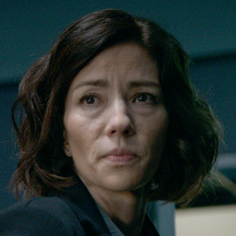

Grupo de Oxford
Vera Ye
Cientista ligada ao grupo de Oxford e filha de Ye Wenjie. Sua morte reúne os antigos colegas e amplia a investigação.
Conteúdo até a temporada 1, episódio 8.
Ver Mapa de Conexões →HISTÓRICO DO PERSONAGEM
Temporada 1
Acompanhe os acontecimentos registrados até o episódio escolhido.
Episódio 01 — Countdown
Cientista ligada ao grupo de Oxford e filha de Ye Wenjie. Sua morte reúne os antigos colegas e amplia a investigação.
Personagens relacionados
- Ye WenjieMãe e filha
- Saul DurandLaboratório e pesquisa
- Jin ChengVínculo acadêmico